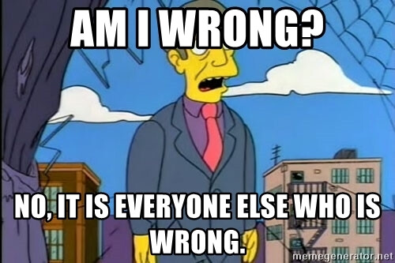

3 Likes
alternatively I could just keep talking to myself
mod privilege means I don’t have to worry about hitting the 20-consecutive-reply limit 
2 Likes
I dont disagree i think hes villaging it up
I actually think most people have accepted him as a villager atm
Can you expand on this one
I really wanna figure derps out
And im having doubts rn wrt my w-read there im ngl
This genuinely concerns me
Not like
With regards to your alignment
But im 99% sure derps and atno are the same alignment simply based off of wind spew
So in a world where we wagon atno and derps dies to arctic’s vig thing
Its 2 villagers or 2 wolves to me
And if theyre villagers we have like 8h to figure shit out (no we arent wagoning katze!!!)
I also recently reread marshal’s iso and along the way i re-read app’s openwolfing thing and i genuinely think its like
Really (unfortunately) townie
But atno today has been Bad
And YBW was also Bad
Aaaaaaaaa idk dude!!
25% is consensus poe i’d say
Zone is in the zone-zone
Most people acknowledge hes in townmeta but capable of faking it and thats that lmao
Marl is v-read for the most part im p sure
For the record
If derps is a villager i think marshal’s scum equity rises by about 5000%
And now im doubting myself and paranoid about marshal
Dude i REALLY need to sleep to be awake for eod but at this rate imma get like 4h of sleep lol
Aaaaaa
I think eli has also had a really shitty day and i can easily see him being a wolf
I townread him d1 and had a gth v-read on him coming into the day but i legit dont see how people can have him as a confident villager
Hes tossing out votes and reads that match thread consensus
Cant explain anything and instead uses buzzwords and goes ‘uhhhhhh. ur scum bc ur scummy’
Idgi
How is he town
1 Like
This has mist doublevoting and a count of 5 nonvoters when there are 4
Also sorry arete im going go sleep in a sec but i’ll wait for your post first
Am tired
there’s a massive disconnect in how people are treating ‘literally every voter on Wind’ and how people are treating Derps
like with Wind people are more-or-less willing to lockclear everyone on her wagon, individual people might leave someone out (like, some people are like ‘Marl could be bussing,’ some people are like 'Jane doesn’t get as much cred because she was stuck on the wagon from a point when it wouldn’t have killed her)
whereas with Derps people are looking at the fact that Wind spent the entire second half of the day trying as hard as possible to kill Derps, and going out of her way to write a wallcase on him, and saying ‘well this doesn’t mean anything, it could be bussing’
even though she was objectively trying harder to kill Derps than any individual voter was trying to kill her
the situations aren’t 100 percent comparable – Wind was KP and so a wolf would be less likely to kill her, some of the people on the Wind wagon have some level of known anti-bussing meta while Wind’s meta is less of a known quantity – but frankly the way the people leading the thread are treating the two situations is weird
(the other thing I notice is that on some level, there’s a handful of ‘people who are always strong presences’ arguing that Derps isn’t spewed, e.g. katze/Marshal, and a lot of people who aren’t usually strong presences arguing that he is, or that he’s a villager for other reasons, e.g. Gorta, which is … well, normally I think I would agree with the ‘strong presences’ group, and it’s weird that I don’t?)
1 Like
that wasn’t a response to your post
I started typing it before you started replying
1 Like
are you good to stay up a few more minutes while I write you a proper response
Oh god thats a lot of words
Quick skim uhhh
Yes theres a weird disconnect
And… idk yeah thats weird
Ok so
I have two worlds in my head right now
I’m unsure how healthy this is but its where im at and i wanna be transparent
Derps/ATN/+1 (… actually beginning to doubt this)
or
Marshal/Eli/+1
Bleh
Weh
Wah
Banana
Uh sure
I can try
Also i super vibe with this recent batch of posts from you aa
A
Aa
Im
99% on this just spewing them both as villagers
It absolutely spews them as the same alignment and… that treatment of derps doesnt feel like a planned bus
Im literally about to sleep and have no clue if this will make sense but heres some world building:
App/Derps V/W or W/V
If you push extremely hard for the dichotomy that they’re unaligned, and call for a vig shot on the other if one flips town, then:
If your scumbud is elim’d, you have essentially cleared the other as a villager
If the villager is elim’d, your scumbud will be shot
No.
Thats stupid
App/Derps W/W
This is the heavy distancing theory in which wind was trying to clear the surviving wolf off of the other one’s flip
If one of your scumbuds is openwolfing and the other is getting flak and being wagoned, the best thing you can do is make people believe they’re v/w
App/Derps V/V
Occam’s Razor says yes.
Wind was setting them up to be elim’d and the other to be shot.
Two villagers for the price of one
Im too tired to go into more detail
But i think we’re fuckin up right now
Re-read some stuff
My reasons to think zone/marshal are never w/w were wrong and i completely misread some shit
I still think its heavily unlikely though given the cfd attempt at eod
Uhh
Ok i habe to go to sleep im sorry
Bye love u aroot sleep well
wait no please don’t go I’m almost done!!!
(you can go if you want I’ll just be sad)
1 Like
Arete i really want you to sleep soon so you can be awake at EoD
Like really badly 
Im going to be honest and say that i dont have the energy to read the post youre writing and all i’d be doing is acknowledging it right now because my eyes are heavy and imsotired
So im gunna sleep and i’ll read it in the morning when i wake up and can comprehend it
Im sorry
Goodnight
alright so
the first point is relatively simple but it’s controversial enough that I’m going to do my best to explain it anyway
so obviously a thing I talk about when I’m complaining about townplay on this site is that everyone sucks at reading spew, and I don’t want to stop at the level one take of ‘Windward called Derps scum therefore Derps is town’
but
there’s a couple things I generally look at when I’m trying to figure that out, which I’m going to gloss roughly as ‘what was the dead wolf actually trying to accomplish’ (i.e., if a wolf spent a lot of time calling someone a wolf but never actually tried to kill them, then it doesn’t spew them town and might be wolf-AI) and ‘do the dead wolf’s posts make sense from a PoV of them having TMI that [player] was [alignment]’
so first, if we look at Wind’s votes
I might have missed something, but this is legitimately all I could find in terms of votes – the meme vote on herself, and a vote on Derps. she’s not at all reluctant to kill Derps, and she never looks for other options
next, if I look at her actual posts, and ask the question ‘did Wind really want to kill Derps,’ I think it’s pretty clear that she did – she basically took every opportunity to push him, and wrote a Wind wallpost to case him, it’s not just isolated instances of shade or anything
so on that metric he looks good
notable Wind posts on Derps
so then I can ask if her posts make more sense from a PoV of having TMI that he would flip scum vs. that he would flip town
to her credit there’s … not a ton there that actually points to it, she’s not blatantly trying to take credit for his death (which would suggest scum) nor preemptively trying to excuse herself for it (which would suggest town), in that respect there isn’t much to go on
(this post does exist but it’s really early and a throwaway comment, before she made a strong read either way)
but I do think her handling of Derps postflip scenarios displays TMI that he’s V full disclosure I only fully thought through this part just now
specifically:
if you read these posts and ask what she’s “expecting,” it’s pretty obvious she’s expecting him to flip town – she’s explicitly setting up scenarios for what to do once Derps flips town whereas she treats the ‘if Derps flips scum’ scenarios as an afterthought, to the point of adding a ‘lol.’ Also, she never (that I could find) tried to imply that anyone might be suspicious for defending Derps, or for defending Derps conditional-on-him-flipping-scum. She isn’t trying to plan for scenarios where he flips scum, just scenarios where he flips town.
this is the part of the post where I start talking about his posts
I thought Derps openly and explicitly saying that he thought Gorta was lock V but that he should be vigged anyway was unlikely to come from scum, like I don’t think a wolf would say that if they put two seconds of thought into appearances
I thought his lack of thread awareness here pointed to him probably not being in scumchat, it doesn’t really feel like it’s faked and I think it’s unlikely that scumchat just wouldn’t be discussing the game at all. this is a weak read but it’s something I remember picking up on.
I thought his analysis of Jane made sense even if I don’t necessarily agree with it + his progression seemed natural
I also don’t think he would push a bussing narrative as a wolf when one of the biggest points in his favor is Wind’s push
there aren’t, like, a lot of posts like this, he doesn’t have a lot of posts today period, but they’re displaying sparks of towniness
honestly I think people being like ‘Arete W/W with Derps???’ is making me townread him more out of spite
God youre such a villager
I skimmed the entire thing and my thoughts are summed up as
“Yeah this makes sense. Oh yeah thats a good point. Oh wtf lol yeah thats super valid. Wait what the fuck. Yeah this is. Ok yeah derps is just V.” Which… makes ATN v to me
Ugh how long until I have to acknowledge your read on kat
I really dont wanna
Anywyas
Marshal/kat started the derps-not-spewed-v arguments
Dont think theyre w/w because of d1 ‘bitchiness’ but ig its possible
im in denial and i still dont think kat is a wolf leave me alone
Marshal felt powerwolfy wrt zone and derps
Chloe is throwing shit in the thread without filtering bc shes tired
Glhf
Thanks for giving me a reason to give in to the paranoia and doubts ive been having all day love u
love you too 
now sleep, you’ve read the post, EoD is in 7.5 hours and presumably you’ll want to be up before EoD proper
1 Like
Eli, NGL, I have been ignoring your 200+ posts for reasons even beyond me, but I am loving this entrance.
Sounds about right. YBW never came back to be evaluated, and ATNN is… well, I disagree with ATNN’s reads regarding Wind’s wagon (and myself).
I object to this plan. I stated at D1 that I would be fine with keeping tabs on the darkvotes, but I also said that I disagree with any motion involving coordinated votes.